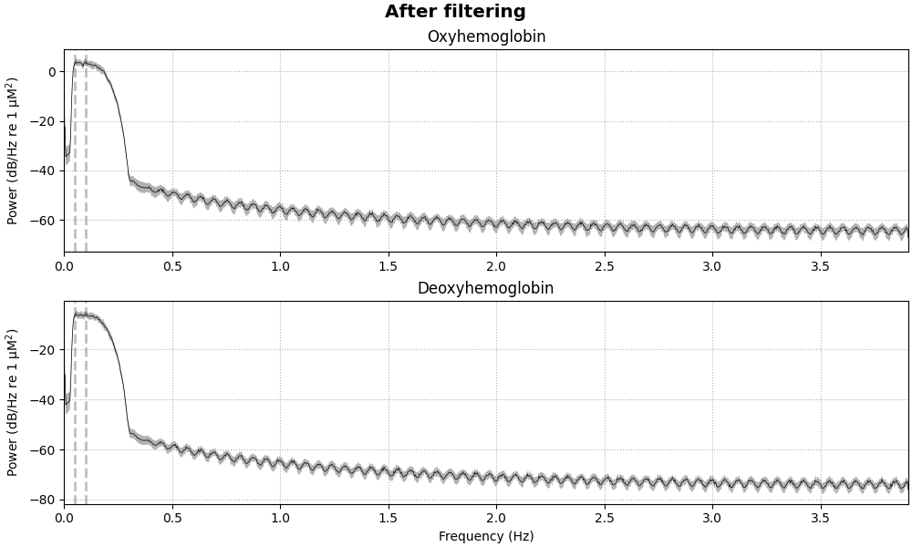

Note
Go to the end to download the full example code. or to run this example in your browser via Binder
Importance of Controls and Parameter Selection#
Warning
DO NOT USE THIS SCRIPT TO PROCESS YOUR DATA
This tutorial demonstrates how NOT to process your functional near-infrared spectroscopy (fNIRS) data. Here I demonstrate that with a simple process pipelines even random noise can look like a canonical haemodynamic response.
This tutorial was written to motivate further interest in to what affect signal processing has on our data. And to provide a concrete example about why you should understand your analysis and not vary parameters to meet preconceived ideas of what your data should look like. I recommend specifying analysis parameters in advance along with your experimental protocol. Hopefully this tutorial also highlights the importance of including a control condition in your experimental design.
The MNE fNIRS waveform tutorial is used as a basis for this analysis, so most of the document looks similar. However, at the midpoint we replace the real data with noise and demonstrate that without careful attention to the analysis parameter it would still appear as if a fNIRS response is observed.
# sphinx_gallery_thumbnail_number = 7
# Authors: Robert Luke <mail@robertluke.net>
#
# License: BSD (3-clause)
import os
import mne
import numpy as np
import mne_nirs
np.random.seed(1)
fnirs_data_folder = mne.datasets.fnirs_motor.data_path()
fnirs_cw_amplitude_dir = os.path.join(fnirs_data_folder, "Participant-1")
raw_intensity = mne.io.read_raw_nirx(fnirs_cw_amplitude_dir, verbose=True)
raw_intensity.load_data()
Loading /home/circleci/mne_data/MNE-fNIRS-motor-data/Participant-1
Selecting channels appropriate for detecting neural responses#
First we remove channels that are too close together (short channels) to detect a neural response (less than 1 cm distance between optodes). These short channels can be seen in the figure above. To achieve this we pick all the channels that are not considered to be short.
picks = mne.pick_types(raw_intensity.info, meg=False, fnirs=True)
dists = mne.preprocessing.nirs.source_detector_distances(
raw_intensity.info, picks=picks
)
raw_intensity.pick(picks[dists > 0.01])
raw_intensity.plot(
n_channels=len(raw_intensity.ch_names), duration=500, show_scrollbars=False
)

<mne_qt_browser._pg_figure.MNEQtBrowser object at 0x7f696edc6e60>
Converting from raw intensity to optical density#
The raw intensity values are then converted to optical density.
raw_od = mne.preprocessing.nirs.optical_density(raw_intensity)
raw_od.plot(n_channels=len(raw_od.ch_names), duration=500, show_scrollbars=False)

<mne_qt_browser._pg_figure.MNEQtBrowser object at 0x7f69c04e9990>
Converting from optical density to haemoglobin#
Next we convert the optical density data to haemoglobin concentration using the modified Beer-Lambert law.
raw_haemo = mne.preprocessing.nirs.beer_lambert_law(raw_od, ppf=0.1)
raw_haemo.plot(n_channels=len(raw_haemo.ch_names), duration=500, show_scrollbars=False)

<mne_qt_browser._pg_figure.MNEQtBrowser object at 0x7f69c04eb2e0>
!!!!!!Replace real data with white noise!!!!!#
Here we replace the signals with white noise. We make the HbR white noise 3 time smaller than HbO as is commonly observed.
raw_haemo._data = np.random.randn(40, 23239) / 1.0e6 * 1
raw_haemo._data[::2, :] = np.random.randn(20, 23239) / 1.0e6 * 3
Removing heart rate from signal (BAD DONT COPY)#
This analysis is BAD and is provided just as a demonstration. Do not do this!!
fig = raw_haemo.compute_psd().plot(average=True, amplitude=False)
fig.suptitle("Before filtering", weight="bold", size="x-large")
raw_haemo = raw_haemo.filter(0.05, 0.1, h_trans_bandwidth=0.2, l_trans_bandwidth=0.02)
fig = raw_haemo.compute_psd().plot(average=True, amplitude=False)
fig.suptitle("After filtering", weight="bold", size="x-large")
- 
Text(0.5, 0.993055, 'After filtering')
Apply Cui negative correlation method#
Here we apply the Cui signal enhancement technique.
raw_haemo = mne_nirs.signal_enhancement.enhance_negative_correlation(raw_haemo)
Extract epochs#
Now that the signal has been converted to relative haemoglobin concentration, and the unwanted heart rate component has been removed, we can extract epochs related to each of the experimental conditions.
First we extract the events of interest and visualise them to ensure they are correct.
events, _ = mne.events_from_annotations(
raw_haemo, event_id={"1.0": 1, "2.0": 2, "3.0": 3}
)
event_dict = {"Control": 1, "Tapping/Left": 2, "Tapping/Right": 3}
fig = mne.viz.plot_events(events, event_id=event_dict, sfreq=raw_haemo.info["sfreq"])

Next we define the range of our epochs, the rejection criteria, baseline correction, and extract the epochs. We visualise the log of which epochs were dropped.
reject_criteria = dict(hbo=10e-6)
tmin, tmax = -1.5, 10.5
epochs = mne.Epochs(
raw_haemo,
events,
event_id=event_dict,
tmin=tmin,
tmax=tmax,
reject=reject_criteria,
reject_by_annotation=True,
proj=True,
baseline=(None, 0),
preload=True,
detrend=1,
verbose=True,
)
Not setting metadata
90 matching events found
Setting baseline interval to [-1.536, 0.0] s
Applying baseline correction (mode: mean)
0 projection items activated
Using data from preloaded Raw for 90 events and 95 original time points ...
0 bad epochs dropped
Plot standard fNIRS response image#
Next we generate the most common visualisation of fNIRS data: plotting both the HbO and HbR on the same figure to illustrate the relation between the two signals.
evoked_dict = {
"Tapping/HbO": epochs["Tapping"].average(picks="hbo"),
"Tapping/HbR": epochs["Tapping"].average(picks="hbr"),
}
# Rename channels until the encoding of frequency in ch_name is fixed
for condition in evoked_dict:
evoked_dict[condition].rename_channels(lambda x: x[:-4])
color_dict = dict(HbO="#AA3377", HbR="b")
mne.viz.plot_compare_evokeds(evoked_dict, combine="mean", ci=0.95, colors=color_dict)
[<Figure size 800x600 with 1 Axes>]
Summary#
Above is a waveform that has many of the characteristics that are expected from a haeomodynamic response. We see a baseline that is around zero, the oxyhaemoglobin is positive and the deoxyhaemoglobin is negative, the peak occurs around 5 seconds then returns to baseline. However, it was generated from random noise!
As this is an introduction tutorial I do not go in to details about the signal process theory behind why the settings above are wrong. But if you are interested you should start with a DSP textbook on signals and systems.
There are many signal processing parameter choices that interact to produce your end result. It is important to have a control condition to ensure that you arent forcing your data to have these fake responses. Its also important to understand the effect that each parameter choice has on your output. Using a receiver operating characteristic is a good approach to understand your analysis. This also highlights some of the concerns with the time domain analysis approach, and the benefits of the GLM style of analysis (see MNE-NIRS fNIRS GLM tutorial) (and Huppert 2016).
Warning
DO NOT USE THIS SCRIPT TO PROCESS YOUR DATA
Total running time of the script: (0 minutes 11.963 seconds)
Estimated memory usage: 448 MB